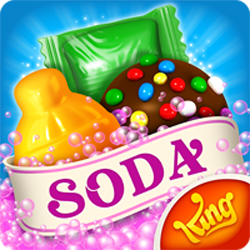

Released in 2014, Candy Crush Soda Saga is a game developed and published by King.
There are thousands of levels to conquer, unique candies, divine matching combinations and challenging game modes brimming with purple soda and fun!
It’s a fun way to relax after a long day at work or school. Compete with millions of people across the globe, win levels, and gain prizes.
It's a game for everyone in your family!
Candy Crush Soda is considered to be one of the most successful games. The game can be played completely through without spending money,
but players can purchase special actions to help clear more difficult boards. The presentation is great, the rules are simple to understand,
and the soda twist makes for some interesting variations on the familiar gameplay. Like every King game, it’s got its fair share of difficult levels!
Players complete levels by swapping colored pieces of candy on a game board to create a match of three or more of the same color.
Matches of four or more candies create unique candies that act as power-ups with larger board-clearing abilities. When these candies are matched,
they can clear a row, column, or other section of the board. Whether it’s reaching a certain goal within a certain number of moves, or clearing candies in a fixed number of moves to rescue gummy bears,
each level poses a different challenge to the user. If the player achieves the goal, they will be given a score between one and three stars and can move onto the next level. If the goal is not achieved,
the player will lose one life and can try again. Players only have five lives unless they obtain the power-up of unlimited lives for a certain period of time. It takes half an hour for one life to be refilled.